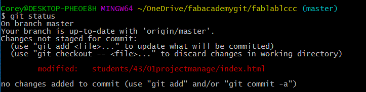
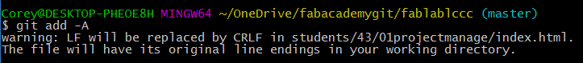
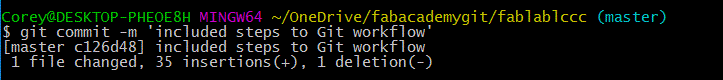
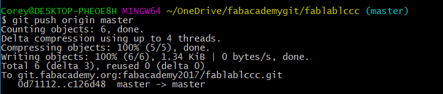
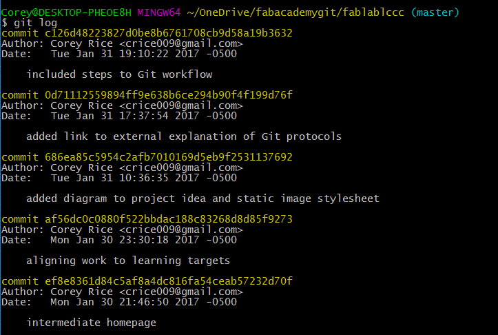

Principles and Practices, Project Management
- Build a personal site describing you and your final project.
- Plan and sketch a potential semester project and add it to your website.
- Upload it to the class archive. Work through a git tutorial.
Learning outcomes:
- Explore and use website development tools
- Formulate a final project proposal
- Identify version control protocols
More concrete evidence:
- Made a website and described how it was done
- Introduced myself
- Described and made a sketch of final project
- Avoided pitfalls along the way
- Documented steps for uploading files to archive
- Pushed to the class archive
Working Through a Git Tutorial
I started by looking into Git. What it is, and what that the common vocabulary for this system must be. I was fascinated to learn that it is a distributed source code management system. I believe I learned this sometime in the past, when I first encountered github.com and did a little research to verify that it was a safe website for downloading Arduino code and libraries.
To start down this road, I went out to dinner with an old friend who is a developer for a local company. I asked him to give me a crash course in Git, and an overview of the relationship between HTML and CSS. He happily obliged, and I was on my way. Later Wednesday evening I filled my time with youtube tutorials on Git, although it was really done from my cell phone in bed, before sleep. When I woke up, Git tutorials were still rolling on autoplay.
Thursday I went into school and during my breaks from teaching I found a useful tutorial to walk be through the steps of Git. I also downloaded Git for Windows, so that I could practice as I went along with the tutorial. I needed a simple file that I could change for sample commits, so I quickly made a simple txt file: hellowWorld.txt (Only after pausing to write this summary did I realize how abysmal my spelling continues to be.) The entire content of the file was one line of text: simple text file for testing...
I played with this file and two folders I had made on my hard drive to act as both master and secondary Git repositories: ‘gitfolder’ and ‘gitclone’ Largely, I just followed the instructions of the tutorial. I did run into some difficulty when trying to move files between repositories for the first time. I thought the the file locations that were in the example might be different from my own computers, so I did not use the ‘..gitfolder/’ location and instead tried to use the entire absolute file address. This gave me errors. Maybe it could work, but I was stymied.
After a break to teach a few more classes, I was back at it again. This time I switched back to completely matching the commands of the tutorial, except for the most obvious places where my folder names must be substituted. It worked. I was able to make my first successful change to the gitclone version of the file, commit the change and then manage to change the gitfolder version. I did run into another struggle during that slowed me down for a bit. I did not init the gitfolder as a ‘bare’ repository, so I did not have permission to push to the gitfolder from gitclone. However, I worked around this by simply changing my directory to the gitfolder itself and fetching the changes instead. After two tries of this, I felt more confident that I understood the process. Certainly not a 100% understanding, but I had the fundamentals. This can guide future study into repository permissions and the dynamics of branches. Three hours of work, and I am just accomplishing the simplest of Git operation.
Making a Website from HTML and CSS
Web development was a very new skill for me. Starting on Friday with W3 Schools lessons for HTML and CSS I was able to quickly develop (or at least utilize) a knowledge base for these critical web languages. I also borrowed an old college book from my roommate: Basics of HTML5 & CSS3 I know that JavaScript would be a powerful addition to this, but I decided take on only two things at a time. I downloaded VS Code and Notepad++ for development, but ultimately settled on VS Code. I enjoy the dark color scheme, definition tooltips and streamlined interface. Getting started was something of a bumpy road. Fumbling through some of the basic commands, and just barely getting an HTML document to display what I think it should with embedded CSS. I tried to make a faveicon in MS paint, and then transitioned to Gimp and finally Inkscape. It took a while, but I came up with an icon that had enough contrast and transparency for a professional look. I started on Friday night, but my work gave way to social endeavors before I had spent more than a couple hours.
Saturday I began the web development work again, and after about two hours of further progress, I stopped to meet with a friend. This particular friend is a lawyer and, while I stopped by to help them survey the scope of some home repairs, we talked about licensing the content on my budding webpage. They had limited knowledge about Intellectual Property, but did eventually reinforce the idea that some sort of simple Creative Commons license would be a good starting point for my work. This recommendation is precautionary. In case I developed a fantastic product by the end of this course and the intellectual property would be of some value. I had looked into such licensing on Friday, but did not implement it as a part of the webpage until after this discussion. The Creative Commons offer a simple utility for embedding the credentials for such licenses. I look forward to the Fab Academy lecture on this licensing.
A Return to Iterative Design
I continued web development Saturday evening and Sunday morning, with occasional breaks for all of the things that make us human. Since web development is uncharted territory for me, it is something that takes a good deal of experimentation. At about 2pm on Sunday I stopped for lunch. I had spent the weekend trying to build a website that could introduce my own persona to the web. I was blending the two goals of what am I able to do with code and what do I want to do with design? A discussion with my roommate uncovered a truth: I was not using iterative design. I had spent my weekend lost in the wormhole of the quagmire of learning to code, mixed with web design. Over the last few hours, I had been changing things, not because they didn’t work, but rather because I didn’t like them.
This is a key distinction. Before I finish the leftover spaghetti lunch, I had decided to change my workflow: I would stop where I am with design. My next steps would be to make a file tree that could be useful for the things I need my website to do. I would ensure that there are enough folders to be organized, an HTML stub for each page, and a CSS file for every distinct page type. Each of these items would need only minimal editing, and then I could return to my work with Git. I could develop this bare-bones website and commit my progress. I could then push all of this to the Fab Academy servers. I would be able to upload a work that meets the basic requirements before the weekend is over. Then I could spend extra time between Monday and Tuesday developing the simplified versions of the content into a state that I could consider completed.
Uploading to the Class Archive
Building the file structure went well and paring down the website versions to their simplest necessary forms went well. I have a few simple pages for “About Me,” “Final Project Ideas,” “Weekly Projects,” and a home page. I also built a ‘stub.html’ that can be used for future week’s assignments. With a little editing of the CSS and HTML I also ensured that the styles were uniform across all pages, and that I could set-up a different looking home page in the future. Once this work was done, I emailed my local instructor, Scott Zitek, for more information about how to upload my web development work. I had looked over some instructions located on the Fab Academy website, for uploading using Cygwin and Mercurial. However, it turned out this method was out of date. Zitek directed me to fablabs.io and git.fabacademy.org where I was quickly able to make accounts and quickly get started. I was thankful for my exploration of Git Bash on Thursday – it greatly expedited the process. The only real slowdown was establishing my SSH key, and connecting that to GitLabs. However, once this was done, the commit and push process was incredibly simple and I was able to push a few changes to my student folder. Once this process was complete, I was anxious to see my website be hosted on the class archive. I looked where I figured that my work may be hosted in the archive, but the stub page my instructor had placed was still the only thing that I could see. I was surprised to find there would be a hold-up to build the work that I had pushed.
Git Workflow
The core workflow of Git, a distributed version control system, is quite straightforward once you are a few steps into its implementation. The handshake procedures of setting up an SSH key, as described above, can be a bit more cumbersome. Luckily, it is only necessary to set-up the control protocols once before the first interaction with the remote repository. After this point, the FTP client uses this key to encrypt and secure the transmission of information between the two repositories.
The common Git workflow is impressively simple:
- Any changes can be made to the files in the local repository. 
- Those changes are recognized automatically by Git, and can be checked with a simple ‘git status’ command. 
- All current changes can be added to the Git staging area by using a ‘git add –A’ command. 
- The changes to files in the staging area can then be committed by using a git command and modifier: “git commit –m ‘a simple comment on changes’” 
- The last necessary step is to push the commits to the remote repository. This can be done with the following command: ‘git push origin master’ which pushes all local changes to the remote repository through the FTP, back to the repository of origin, specifically in the master branch of that repository. 
- If you would like to verify that everything went well, it is possible to see a log of all of the commits pushed to the origin using the ‘git log’ command.